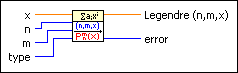

Legendre Polynomial VI
Owning Palette: Orthogonal & Non-orthogonal Polynomials VIs
Requires: Full Development System
Calculates the associated Legendre polynomial of degree n and order m at point x.

 Add to the block diagram Add to the block diagram |
 Find on the palette Find on the palette |